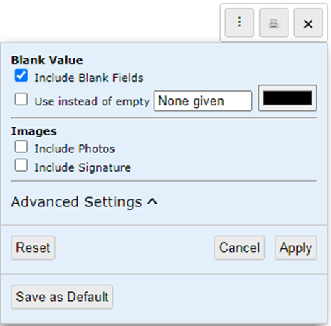
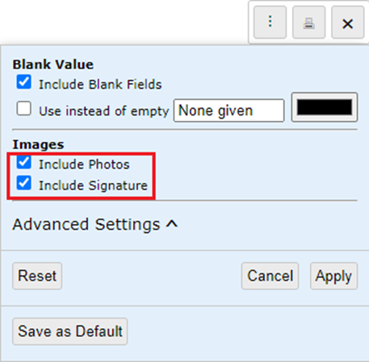
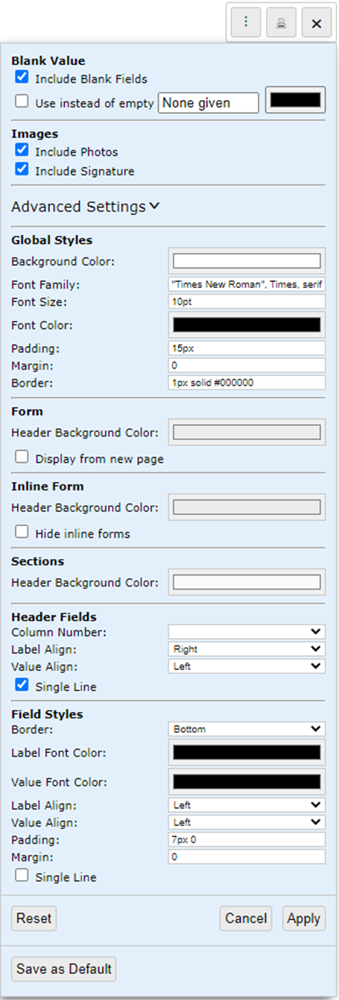

Changing the layout of a Workflow Printout
Prior to printing a workflow, ensure that your browser's popup blocker is disabled.
To change the layout of a workflow printout:
- Click the Print icon.
The layout will open in a new tab.
- Click the Settings (vertical ellipsis) icon.
The Settings window will open.

- In the Images section, click the Include Photos and Include Signature checkboxes.

- To make changes to the layout and design, click the Advanced Settings dropdown icon.

- Once you have configured the layout and design as required, click Apply.
Any image displayed on the print layout can be resized by clicking the corner of the image and dragging to the size you prefer.